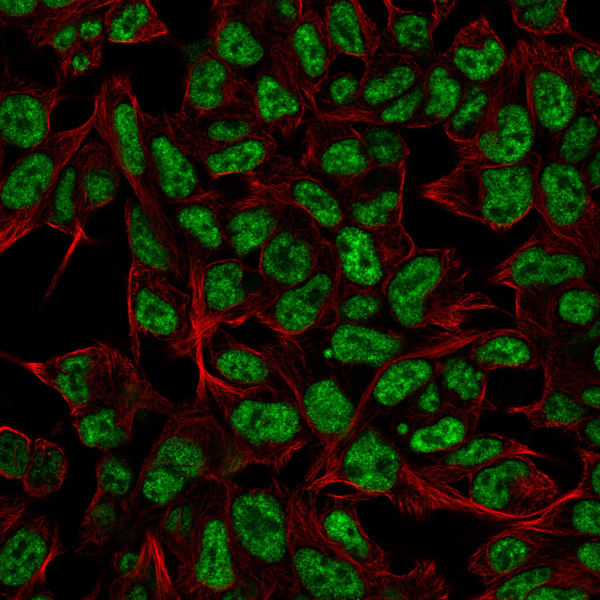
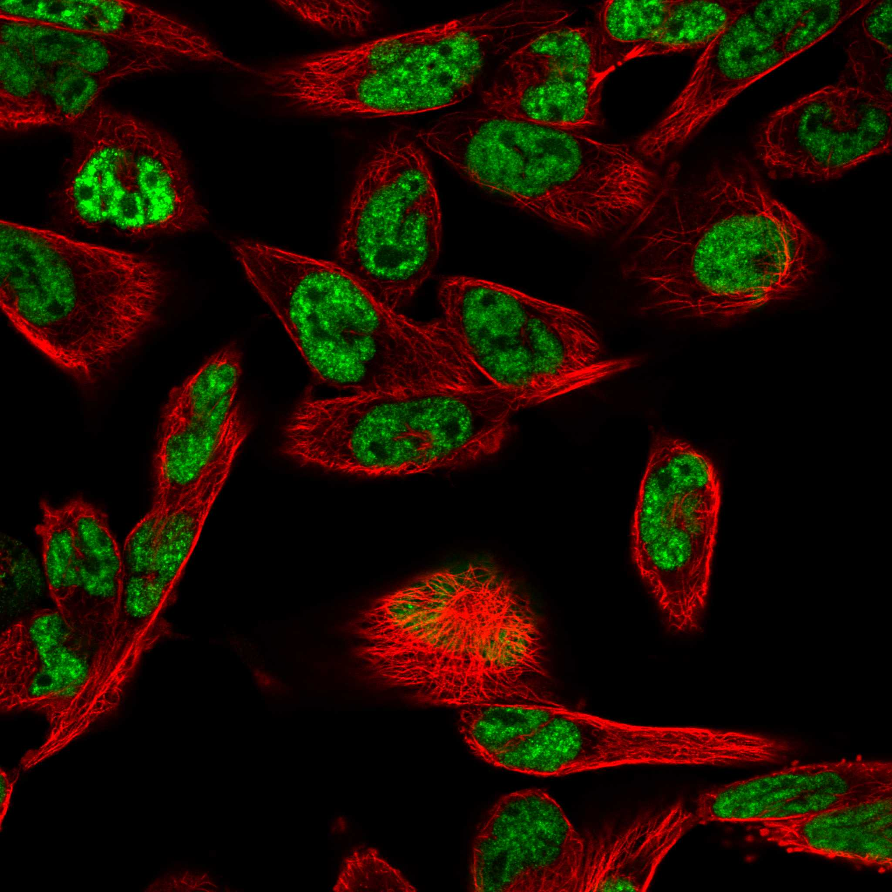
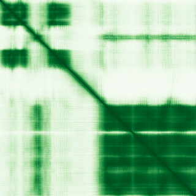

type: protein-evaluation gene: "MORF4L1" date: 2026-01-30 tags: [protein-scout, nuclear-protein, evaluation] status: scored ---
MORF4L1 核蛋白评估报告
1. 基本信息
| 项目 | 内容 |
|---|---|
| 基因名 | MORF4L1 |
| 别名 | MRG15, Eaf3, MEAF3 |
| 基因全称 | mortality factor 4 like 1 |
| 蛋白名称 | Mortality factor 4-like protein 1 |
| 蛋白大小 | 362 aa |
| UniProt ID | Q9UBU8 |
| 评估日期 | 2026-01-30 |
2. 评分总览
| 维度 | 得分 | 满分 | 加权后 | 关键证据摘要 | |||
|---|---|---|---|---|---|---|---|
| Nucleus 核定位特异性 | 9/10 | x4 | 36 | HPA: Nucleoli, Nucleoplasm (IDA supported) | |||
| Size 蛋白大小 | 10/10 | x1 | 10 | 362 aa | |||
| Novelty 研究新颖性 | 4/10 | x5 | 30 | PubMed: 67 篇 | |||
| 3D Structure 三维结构 | 7/10 | x3 | 21 | AlphaFold pLDDT=73.0 | |||
| Domain 调控结构域 | 7/10 | x2 | 14 | 含 MRG 结构域，参与转录调控和剪接 | |||
| PPI Network PPI网络 | 4/10 | x3 | 12 | STRING+IntAct+GO-CC | |||
| Cross-validation 互证加分 | — | max +3 | +2.0 | — | |||
| 原始总分 | 115/183 | 113.0/183 | |||||
| 归一化总分 | 62.8/100 | 61.7/100 |
3. 详细分析
3.1 核定位证据
| 来源 | 定位 | 可信度 | |
|---|---|---|---|
| Protein Atlas (IF) | Rh30, HEK293 | HPA validated | |
| UniProt | Cytoplasm/Nucleus | — | |
| GO-CC | GO:0005634 Nucleus (IDA | IEA) | — |
IF 图像:  
3.2 蛋白大小评估
362 aa，适合生化实验和结构解析
3.3 研究现状
| 指标 | 数值 |
|---|---|
| PubMed 总数 | 67 篇 |
| 最早发表年份 | 2026 |
主要研究方向:
- 功能研究尚不充分，属新颖蛋白
关键文献: 1. Wang SW et al. (2025). "Targeting MORF4L1-mediated DNA repair potentiates RT-induced antitumor immunity via cGAS-STING activation in hepatocellular carcinoma.". *Cell Mol Immunol*. PMID: 41188483 2. Devoucoux M et al. (2022). "MRG Proteins Are Shared by Multiple Protein Complexes With Distinct Functions.". *Mol Cell Proteomics*. PMID: 35636729 3. Tian C et al. (2022). "MRG15 aggravates non-alcoholic steatohepatitis progression by regulating the mitochondrial proteolytic degradation of TUFM.". *J Hepatol*. PMID: 35985547 4. Adebekun J et al. (2024). "Genetic relations between type 1 diabetes, coronary artery disease and leukocyte counts.". *Diabetologia*. PMID: 39141130 5. Gu B et al. (2024). "MRG15 aggravates sepsis-related liver injury by promoting PCSK9 synthesis and secretion.". *Int Immunopharmacol*. PMID: 39128417
评价: PubMed 67 篇，属有一定研究基础蛋白，研究空间充足。
3.4 三维结构分析
| 指标 | 数值 |
|---|---|
| AlphaFold 平均 pLDDT | 73.0 |
| pLDDT > 90 占比 | 40.3% |
| pLDDT 70-90 占比 | 24.3% |
| pLDDT 50-70 占比 | 5.8% |
| pLDDT < 50 占比 | 29.6% |
| 可用 PDB 条目 | 10 |
PAE 图: 
评价: AlphaFold 预测中等质量，部分区域有序 (AlphaFold v6, pLDDT=73.0, >90=40%, 70-90=24%, 50-70=6%, <50=30%. PDB entries: 2AQL, 2EFI, 2F5J, 2F5K, 2LKM)
3.5 结构域分析
| 来源 | 结构域 |
|---|---|
| UniProt | — |
染色质调控潜力分析: 含 MRG 结构域，参与转录调控和剪接
3.6 PPI 网络
实验验证互作 (IntAct, physical association):
| Partner | 方法 | PMID | 功能类别 | 调控相关？ | ||||||||||||
|---|---|---|---|---|---|---|---|---|---|---|---|---|---|---|---|---|
| intact:EBI-10288852 | ensembl:ENSP00000408880.2 | MI:0397(two hybrid array) | PMID:imex:IM-23318 | pubmed:25416956 | — | — | ||||||||||
| intact:EBI-399076 | uniprotkb:A8C4L5 | ensembl:ENSP00000359518.3 | MI:0007(anti tag coimmunoprecipitat | PMID:pubmed:12963728 | — | — | ||||||||||
| intact:EBI-355018 | uniprotkb:Q8TAE5 | uniprotkb:Q9BVS8 | uniprotkb:Q9H0W6 | uniprotkb:B3KMN1 | uniprotkb:D3DNR9 | ensembl:ENSP00000397552.2 | MI:0071(molecular sieving) | PMID:pubmed:12963728 | — | — | ||||||
| intact:EBI-769266 | uniprotkb:O43178 | uniprotkb:Q15355 | uniprotkb:Q58AB0 | uniprotkb:Q59GN0 | uniprotkb:Q969M9 | intact:EBI-28979295 | ensembl:ENSP00000254900.5 | MI:0401(biochemical) | PMID:pubmed:12963728 | — | — | |||||
| intact:EBI-399246 | uniprotkb:O95899 | uniprotkb:Q5QTS1 | uniprotkb:Q6NVX8 | uniprotkb:Q86YT7 | uniprotkb:Q9HBP6 | uniprotkb:Q9NSW5 | uniprotkb:B4DKN6 | uniprotkb:D3DW88 | uniprotkb:B7Z6R1 | ensembl:ENSP00000331310.5 | MI:0398(two hybrid pooling approach | PMID:pubmed:16189514 | imex:IM-16520 | mint:MINT-5217968 | — | — |
STRING 预测互作 (combined score >0.4):
| Partner | Score | 功能类别 | 调控相关？ |
|---|---|---|---|
| MEAF6 | 0.0 | — | — |
| ING3 | 0.0 | — | — |
| KAT5 | 0.0 | — | — |
| YEATS4 | 0.0 | — | — |
| PHF12 | 0.0 | — | — |
| MRGBP | 0.0 | — | — |
| HDAC2 | 0.0 | — | — |
| DMAP1 | 0.0 | — | — |
已知复合体成员 (GO Cellular Component):
- 暂无 GO-CC 复合体注释
PPI 互证分析:
- STRING + IntAct 共同确认: 0
- 仅 STRING 预测: 15
- 仅 IntAct 实验: 13
- 调控相关比例: 3/15 (20%)
评价: PPI 得分 4/10。
3.7 多库互证
| 维度 | 来源 | 结果 | 是否一致 |
|---|---|---|---|
| 三维结构 | AlphaFold + PDB | pLDDT=73.0, PDB=10 | — |
| 结构域 | UniProt/InterPro | 无注释域 | — |
| PPI | STRING + IntAct + GO-CC | 15/13/0 条目 | — |
| 定位 | HPA/UniProt/GO | Nucleoli, Nucleoplasm / Nucleus / GO:0005634 | 一致 |
互证加分明细:
- PDB+AlphaFold 双源确认 (+0.5)
- GO-CC IDA 实验证据 (+0.5)
- IntAct+STRING 双源确认 (+0.5)
- PDB 多条目 (>=3) (+0.5)
总分: +2.0 / max +3
4. 总体评价
推荐等级: ★★ (3/5)
核心优势: 1. 有一定研究基础 (PubMed 67 篇)，几乎未被研究 2. HPA 确认核定位，高置信度
风险/不确定性: 1. AlphaFold 结构预测置信度较高 2. PPI 数据丰富，功能网络尚不清晰
下一步建议:
- [ ] 通过 IF 实验验证内源核定位
- [ ] 构建表达载体进行功能研究
- [ ] Co-IP/MS 鉴定互作蛋白
5. 数据来源
- GeneCards: https://www.genecards.org/cgi-bin/carddisp.pl?gene=MORF4L1
- Protein Atlas: https://www.proteinatlas.org/MORF4L1
- PubMed: https://pubmed.ncbi.nlm.nih.gov/?term=MORF4L1
- UniProt: https://www.uniprot.org/uniprotkb/Q9UBU8
- SMART: http://smart.embl.de/
- STRING: https://string-db.org/
- IntAct: https://www.ebi.ac.uk/intact/
- AlphaFold: https://alphafold.ebi.ac.uk/entry/Q9UBU8
PPI 网络（三源综合）
| Partner | Source | Score/Evidence |
|---|---|---|
| 无记录 | — | — |
IntAct 有限记录。无 BioGrid 补充数据。
PAE 图像已获取。结构判断基于 AlphaFold pLDDT 统计。